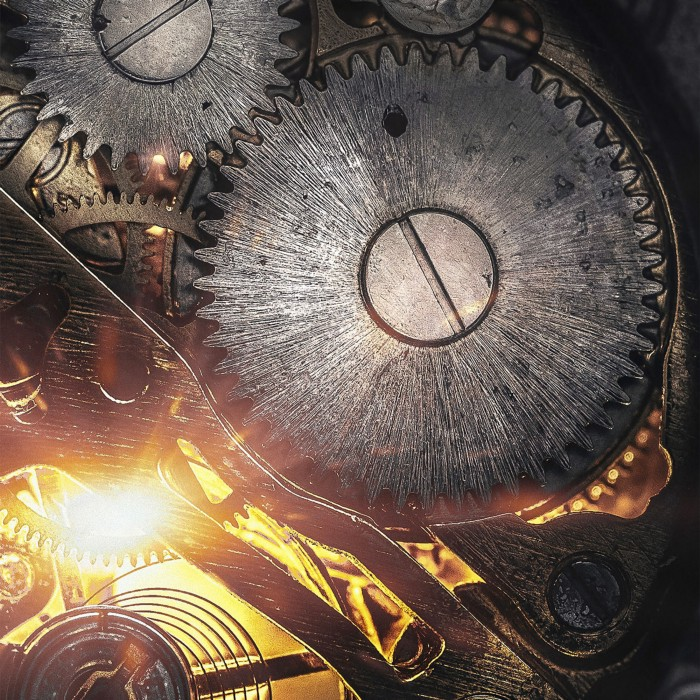
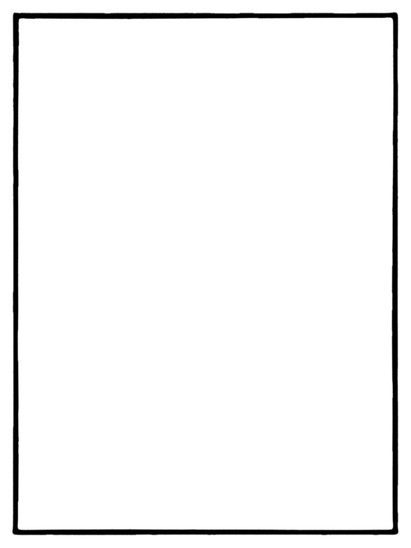

BEST PHOTOGRAPH
Don Giannatti
Jul 21 5 min read
PHOTO

They would have been treasured images, but I simply did not do them.
It was just last Christmas when my father-in-law came for the annual Christmas Dinner at the Giannatti’s. We host about 20 people here throughout the day, and Floyd always came over with his warm and infectious smile. The dude knew how to work a room.
He was sitting near the large picture window in amazing soft light, hunched over a bit due to severe back pain, but was still smiling intently at a story my brother-in-law was telling him. An adventure story, I’m sure. The light was fantastic… a soft, wrapping light that brought out the features of his 82 years and added a bit of sparkle to his eye.
“I should grab my camera and get that”, I thought, just as someone asked me to do something in the kitchen. I didn’t grab my camera at that moment, and when I finished in the kitchen, the moment was lost.
“I will get it next year”, I thought to myself.
There will be no next year.
We were on a small dirt road, in a forest somewhere up north, when my mom and dad started playfully goofing around and tossing pine cones at each other. It was a sincere moment between them and something rather… well, rare.
“I should grab my camera and get that”, I thought, and I headed back to the truck. I stopped to grab a drink and when I returned they had moved on to doing something else… each alone to themselves.
“I’ll be ready next time,” I thought. “I will keep my camera at the ready.”
It was a very warm summer’s day when my next-door neighbor, Mr. Bailey, asked me to come over and see something he had done. It was a magnificent stained glass decoration that he had lovingly built by hand. The craftsmanship was stunning and he was very proud of the work he had put into it. At 90, working with your hands on delicate things like glass is no easy feat.
“I should grab my camera and get that”, I thought, it would be a great portrait.
But I got caught up in other things and didn’t get back over to my neighbor’s house to make that portrait. The light was great, the moment perfect, the artist and the art ready to go.
And then they were all, in a seemingly fraction of a second, gone.
Time.
A true luxury, a gift of improbable proportions, a terrible foe, and an all-around bastard.
Time is the currency we always underestimate. We think we are given vast quantities of it to spend as we want, whenever we want, on the most frivolous things we want.
“There’s more where that came from” is a wonderful mantra when thinking about money. It sorta sucks big time when thinking about time.
There is no more where it comes from. There is no savings plan, no 401K for hours, no slowdown mechanism. No do-overs.
We can make more money. We cannot make more time. And time is even more relentless than the seas that pound rocky shores to sand over millennia. Nothing we can do, buy, beg or steal can stop time from simply passing.
Except… a camera.
To me, the still image is the most powerful tool we have to stop time. At least cheat it just ever so much. Ineffective, lame, small potatoes tool for sure. But it’s all we have at the moment.
“Click”.
I got you now, time. In fact, I preserved that moment, however simple and unsophisticated my capture of it may be, forever. That 1/250th of a second. Out of a lifetime… Yeah — I got that one, time dude… so bite me.
“Click”.
My first daughter at 4 days old, lying in a patch of sunlight on the floor near our window.
“Click”.
My girls laughing for their first “trio” shot (with ever so many more to come) on a small rock outcropping in the Ahwatukee Foothills. That rock is gone, covered over by a CVS Pharmacy and a Kentucky Fried Chicken franchise. And my girls are all oh, so much older… but I got that tiny little moment of our family lives.
I GOT IT.
On a tiny piece of slide film, now scanned and printed and archived.
“Click”.
My wife, graduating with honors from her Master’s Program. What a day.
Those are a few of the shots I got. I had my camera with me and I cheated time a bit. It was as fleeting as ever, but I snagged my 125th of a second of it and preserved it in the best way I know. Primitive and less than perfect, but better we have it than not.
We turn our lenses on the things that matter to us far less frequently than we photograph things that in the end have no meaning at all. I would trade a terabyte of forgettable model shots for a gig of my folks, or of my kids growing up.
I never made it back over to Mr. Bailey’s, and he passed later that week. My folks and I never went up to the little road in a forest again, and Floyd passed away a couple of weeks ago.
Those photos will never be made.
Time made certain of that. Time didn’t hear me say ‘next time’ because, well… there is no next time.
Time smiles and waves when it even bothers to acknowledge a “next time”. Time laughs at the arrogance of the human race, constantly racing away from moments that will never come again in order to hoard things that simply rot.
The moments we live are spent as we live them. We never know how much time we have, and yet we waste so much of it on things that have absolutely no importance while missing those small, even tiny moments that would have been cherished. Forever.
“Click”.
The still image is, for me, one of the most fascinating of all art forms. Capturing a moment of time, and holding true to that moment as best it can, the photograph can help us feel, remember, and enlighten. Yes, it can trick and deceive us as well, but that is for another essay, at another time. For now, we are discussing the better side of the photograph.
What were the images you missed on your journey from one point in time to another, as yet undefined point in time?
If you are like me, like most of us really, there are too damned many.
I am a photographer, designer, and photo editor. You can find me at my self-named website or at Project 52 Pro System where I teach commercial photography online. This is our tenth year of teaching, and it is the most unique online class you will find anywhere.
You can find my books on Amazon and I have taught two classes at CREATIVELIVE.